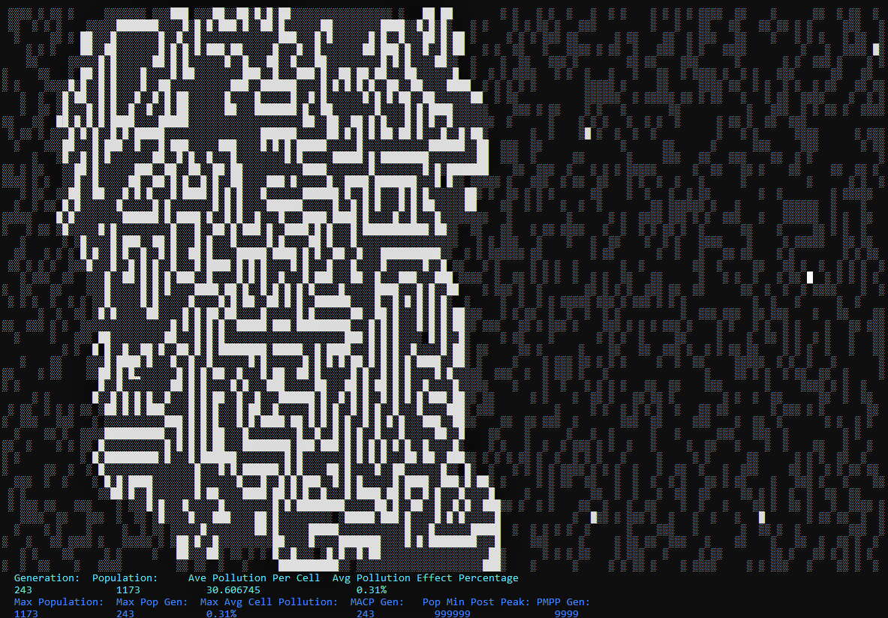
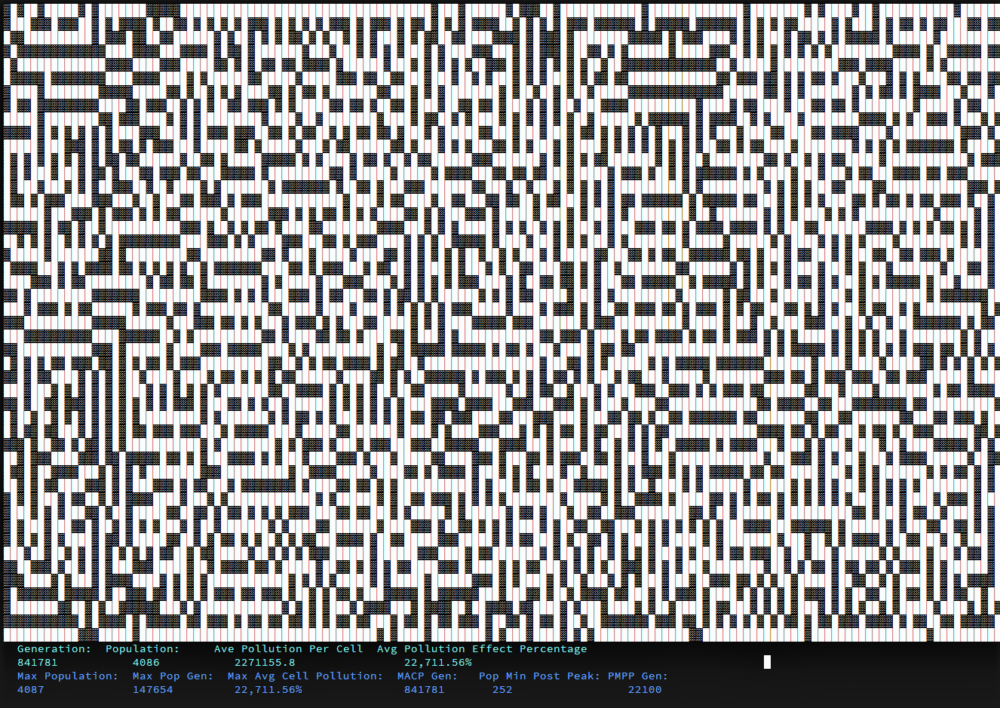

Portfolio
Console Conway’s Game of Life
Repo For those unfamiliar with Conway’s Game of Life, it is a mathematical model of living cells on a two dimensional grid. The rules are exceedingly simple:
- Every cell on the gird is either alive or dead.
- If dead cell has exactly three live neighbors, it becomes alive.
- If an alive cell has two or three neighbors, it remains alive.
- If an alive cell has fewer than two or more than three neighbors, it dies.
Out of these rules come complicated behaviors. More can be read here.
Some years ago I created a Conway’s Game of Life in an Excel spreadsheet just to see if I could. I had to enable circular references, turn on manual calculation, and write a macro to loop that calculation.
My take differed from the classic Conway Game of Life in a few ways:
- it took place in a bound container, not an infinite expanse.
- In addition, user did not put in initial conditions. Instead, there was a chance of “spontaneous birth”, wherein there was a small random chance a dead cell would come to life. After hundreds or perhaps thousands of generations of spontaneous births, eventually two or more would occur in such a configuration that a sustainable, chaotic, cluster of life would bloom.
- Every turn a cell is alive, its level of “pollution” rises. Every time the cell is unoccupied, it falls. Pollution effects the rate of spontaneous births, as well as introducing the chance that a birth according to Conway’s rules succeeds, and finally, can create the possibility of spontaneous death in a cell that should remain alive.
By adjusting the rates of chance for all these events, fascinating trends would occur. Pollution could be displayed in a “heat map” and populations that once spread across the entire field would begin to retreat to “safer areas”, only to eventually migrate away from them. Sometimes whole populations would die out, only to be reborn again once the environment recovered.
As a challenge I tried to see if I could replicate this in the form of a console application in C#
The application is currently in an early developmental stage limited functionality. Even in its formative state, it helps me learn and appreciate about the complexities of Conway’s game. For example, when I added the logic that reduced and eventually curtailed all spontaneous birth once pollution rose to a certain level, I hadn’t realized that I never added a corresponding spontaneous death. Over the course of hours a stable configuration formed in the center of the field. Outside of the field, pollution and population rose and fell in tailing periodic patterns, but every time the chaos of a new generation came in contact with the field, the stable pattern grew. I left it run and after a few hours and a hundred thousand generations, the whole screen settled into a stable always live pattern according to Conway’s rules. Order from chaos!
Eventually I would like to turn it into a web application just for giggles.. My progress can be found here.